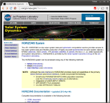
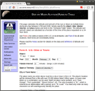
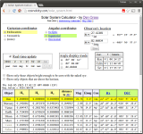
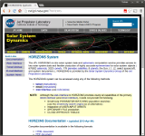
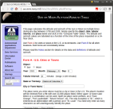
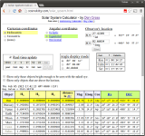

International Astronomical Union
International Astronomical Union Standards Of Fundamental Astronomy
International Earth Rotation and Reference Systems Service
Comet/asteroid Orbit Determination and Ephemeris Software by Jim Baer
| JPL Horizons  |
US Naval Observatory sun/moon alt/az table  |
|
| Solar System Calculator  |
Celestial Navigation Website |
The Calculated Sky |